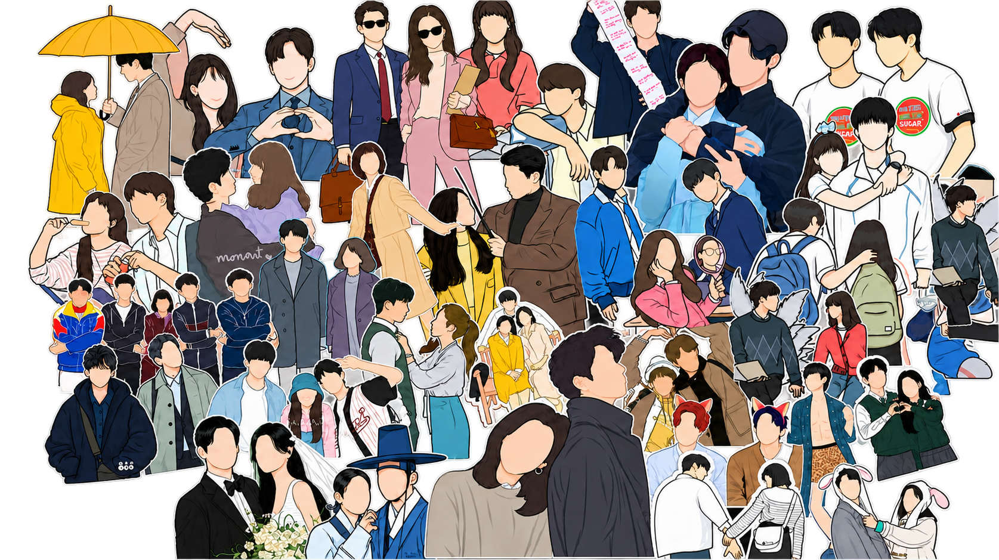

Discover Your Next K-Drama!
Explore popular Korean dramas, discover new stories, and find your next series to watch.
Explore Dramas
Queen of Tears
A heartfelt romantic drama about Baek Hyun-woo and Hong Hae-in, a married couple whose seemingly perfect marriage begins to fall apart as they face personal and relationship struggles. As unexpected challenges test their love, they gradually rediscover the feelings that brought them together and learn the true meaning of love, commitment, and second chances.
View Characters
Hong Hae-in — A successful department store heiress.
Baek Hyun-woo — A lawyer who comes from a humble family.


Lovely Runner
A romantic fantasy drama about Im Sol, a devoted fan who gets the chance to travel back in time and save the life of her favorite celebrity, Ryu Sun-jae. As she tries to change his tragic future, their lives become unexpectedly intertwined, leading to a heartfelt story of love, fate, and second chances.
View Characters
Im Sol — A devoted fan who travels back in time.
Ryu Sun-jae — A popular singer and actor.
About KDramaList
KDramaList is a simple landing page created for Korean drama fans who want to discover interesting stories and memorable characters.